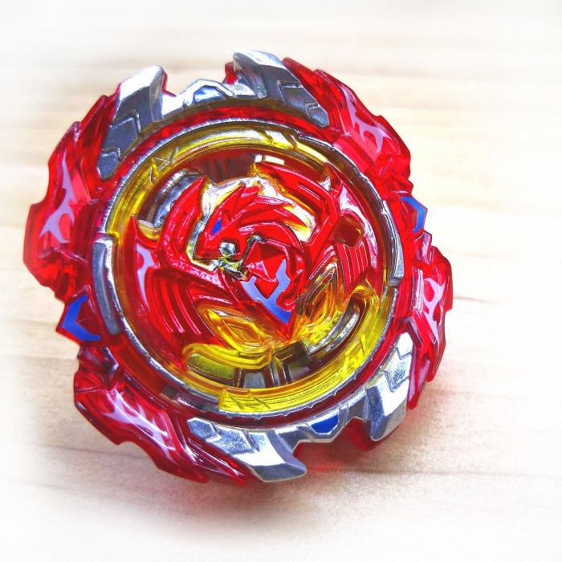

Choose your strong BBlade:
Fafnir F4
Fafnir F4 – это бей нового поколения. Его специально сконструировали для мега битв
и упорных сражений. Энергетический слой волчка выполнен из металла и пластика,
дополнен резиновыми вставками. Сочетание разных элементов позволило бейблейду
демонстрировать оптимальные защитные характеристики с сильным противником и
хорошие атакующие способности с остальными беями.
Revive Phoenix
Revive Phoenix - beyblade защитного типа. Это не помешало ему попасть в ТОП самых
сильных блейдов! Созданный по системе Super Z Layer System, этот волчок удачно
соединил в себе силу, скорость и устойчивость. Есть у него и своя «изюминка»:
энергетический слой обрамлен съемным кольцом. Слетая во время битвы,
такая рамка может тяжело травмировать соперника.

Valkyrie Zenith
Волтраек – персонаж не новый. Энергетический слой стал значительно более плотным
и объемным. Это не удивительно, ведь внутри – спрятано настоящее оружие
(выдвижные крылья). Силовой диск имеет уникальную форму (в виде шестиугольника).
Наконечник оснащен маленькими шипами. Такая конструкция позволяет атаковать с
большой силой, при этом сохранять свою скорость!
Dead Hades
Замыкает ТОП один из наиболее загадочных персонажей мультфильма - Dead Hades.
Его умение побеждать топовые блейды из разных сезонов уже вошло в легенду.
К особенностям бея относят двустороннюю рамку, устойчивый драйвер, слегка
приплюснутый силовой диск. Большой вес и плотная конструкция помогают бею
одерживать одну победу за другой!